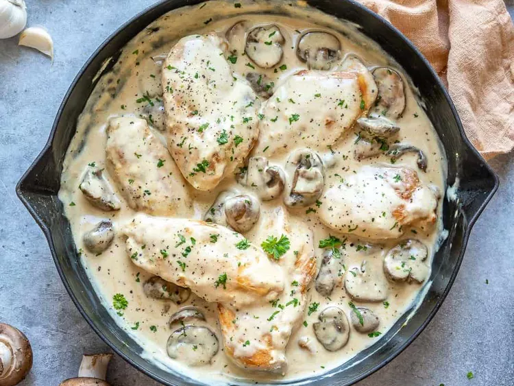

Home
Romantic Chicken with Artichokes and Mushrooms

Description
Romantic Chicken with Artichokes and Mushrooms is a rich and flavorful dish perfect for a special
occasion. Tender chicken breasts are seared to golden perfection, then simmered in a creamy,
herb-infused sauce with earthy mushrooms and tangy artichoke hearts. The combination of flavors
creates a luxurious balance of savory, slightly tangy, and umami notes, making each bite feel indulgent.
Often finished with a touch of white wine, garlic, and Parmesan cheese, this dish pairs beautifully
with pasta, rice, or crusty bread. Whether for a date night or an elegant dinner, this comforting yet
sophisticated meal is sure to impress.
Ingredients
- 4 skinless, boneless chicken breast halves
- salt and pepper to taste
- 1 tablespoon of olive oil
- 1 tablespoon of butter
- 1 (14 ounce) can marinated quartered
artichoke hearts, drained, liquid reserve
- 1 cup sliced fresh mushrooms
- 1 cup white wine
- 1 tablespoon capers
Steps
- Season chicken with salt and pepper. Heat oil and butter in a large skillet over medium heat.
Brown chicken in oil and butter for 5 to 7 minutes per side; remove from skillet, and set aside.
- Place artichoke hearts and mushrooms in the skillet, and saute until mushrooms are brown and tender.
Return chicken to skillet, and pour in reserved artichoke liquid and wine. Reduce heat to low, and
simmer for about 10 to 15 minutes, until chicken is no longer pink and juices run clear.
- Stir in capers, and simmer for another 5 minutes. Remove from heat; serve immediately.